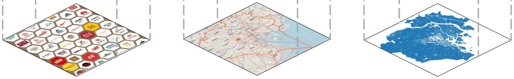
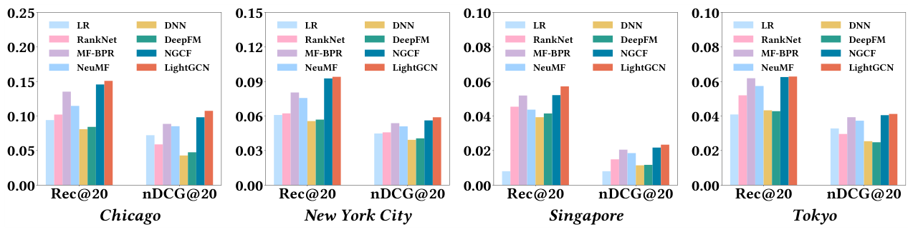

OpenSiteRec: An Open Dataset for Site Recommendation (OpenSiteRec：一个面向选址推荐的开放数据集)
- 会议/期刊: SIGIR 2024
- 作者与机构: Xinhang Li, Xiangyu Zhao, Yejing Wang, Yu Liu, Yong Li, Cheng Long, Yong Zhang, Chunxiao Xing（清华大学、香港城市大学、南洋理工大学）
- 推荐链路定位: 召回（品牌→区域 Top-N 候选排序）
- 研究方向: 时空轨迹与 POI 本地生活推荐 / 图神经网络与知识图谱推荐
- 论文原文: https://arxiv.org/abs/2307.00856v1
- 开源代码: https://github.com/HestiaSky/OpenSiteRec
TL;DR (1分钟核心速览)
选址推荐长期缺乏公开基准：既有工作各自定义任务、只覆盖极少数连锁品牌、数据从不公开，导致方法无法横向比较。本文给出统一问题定义（品牌集合 \(\mathcal{B}\)× 区域集合\(\mathcal{R}\)上的 0/1 交互矩阵\(P\in\{0,1\}^{M\times N}\)，为每个品牌排序候选区域），并发布首个公开数据集 OpenSiteRec——4 座都市、5 类实体、9 类关系的异构图。在 5-core 过滤 + 70/10/20 划分 + 全库排序（All-Ranking） 协议下基准 16 个模型，LightGCN 在芝加哥/新加坡/东京三城 Recall@20 均夺冠，相对 MF-BPR 提升 13.2%–32.4%。
Background & Motivation (背景与核心矛盾)
- 主流范式: 选址推荐被视为排序任务，代表工作以人工特征工程（地理、人口、POI 密度）驱动点级打分，如 DeepStore、WANT、CityTransfer 的跨城知识迁移，以及 UrbanKG 的图神经网络方案。
- 前人局限: ① 数据范围极窄——Geo-Spotting 只做纽约 3 个快餐品牌，DD3S 只有约 10 个候选区域，BL-G-CoSVD 只有 5 类店型，跨城工作仅覆盖 3 个连锁酒店品牌；② 无一公开数据集，任务定义五花八门（店型推荐、消费额预测、KG 链接预测），彼此无法比较、必须从零重做。
- 核心洞察 (Key Insight): 所有既有定义在抽象层是同构的——最终都输出「站点排序列表」。因此可用「品牌–区域 0/1 共现矩阵」统一任务，并把品牌、类别、POI、商圈、区域组织成异构图表征，让商业关系（竞争、同集团）与地理关系（邻近、相似）同时进入模型。
- 本文切入点: 以统一原型定义 + 首个大规模公开异构图数据集 + 16 模型基准，把选址推荐从「各自为战」变成可复现的开放任务。
Method (核心方法设计)
1. 整体框架 (Overall Architecture)
OpenSiteRec 不是端到端模型，而是一条「数据构建 → 异构图组织 → 统一评测」的流水线。输入为 OpenStreetMap 抽取的 POI（2022-12-01 快照，要求至少一个 name 标签）与四城政府开放门户的区域/商圈多边形；中间层对每个 POI 做品牌归一（Soundex 音近 + Jaro 编辑距离双通道匹配 Wikidata）与三级类别指派，再用多边形包含关系判定其所属区域与商圈；输出层将 POI 视为连接 Brand 与 Region 的桥接实体，生成 \(P\in\{0,1\}^{M\times N}\)（Brand 当 "user"、Region 当 "item"），并按 5-core 过滤后投入 16 个推荐模型做 Top-20 全库排序。
flowchart TD
A["OSM POI + 政府区域/商圈边界"] --> B["品牌归一化: Soundex + Jaro 双通道匹配"]
B --> C["异构图: 5 类实体 / 9 类关系"]
C --> D["品牌-区域 0/1 交互矩阵 P"]
D --> E["5-core 过滤 + 70/10/20 切分"]
E --> F["16 个基线模型全库 Top-20 排序"]
（图 1：OpenSiteRec 异构图模式，实线为确定关系，虚线为可推导的不确定关系）
2. 关键设计拆解 (Key Designs)
-
统一问题定义（把 4 种异构任务压成一张排序表）：痛点在于既有定义互不兼容。本文令 \(P_{ij}=1\)当且仅当品牌\(b_i\)在区域\(r_j\)拥有至少一个 POI，任务即学习打分\(\hat{s}_{ij}\)并按\(\hat{s}_{ij}\) 降序返回候选区域列表。因为不再需要 KG 链接预测的 relation 语义或消费额回归的连续监督，所有方法（图、CF、CTR、LTR）都能直接复用同一份数据与指标，这是"可比较性"的本体来源。
-
异构关系补全（把"竞争"与"地理邻近"写成可算的边）：痛点在于纯交互图极度稀疏（密度 0.18%–1.04%），几乎无法靠共现刻画相似性。本文将 Wikidata 的
See Also/同最低类别品牌连为 Related/Competitive 边；区域侧用最短距离阈值构造 NearBy（\(\le 0.5\)km），用窄类别分布余弦相似度构造 Similar：\(s_{ij}=\frac{\boldsymbol{d}_i\cdot\boldsymbol{d}_j}{\|\boldsymbol{d}_i\|\|\boldsymbol{d}_j\|}\ge 0.9\)，其中\(\boldsymbol{d}_i=[n_1,\dots,n_K]\) 为区域内各窄类 POI 计数。直觉是：稀疏场景下，这些先验边充当隐式正则，把"和我在同一商圈开店"的信号注入 embedding 传播。 -
品牌匹配双通道校验（保证标签可靠性）：痛点是大多数 POI 无 brand 标签，品牌名存在多语种/多写法歧义。本文先做音译归一（日语 Hepburn、中文拼音）再转 Unicode，仅当 Soundex 音近与 Jaro 文本距离（阈值 0.8）同时命中才判为同一品牌，随后按并查集合并同品牌名集合。双通道策略把假阳性压到很低——每城人工抽检 5% 匹配结果"相当可信"。
-
训练目标与评测口径: 数据集本身不定义损失，基准实验沿用各基线原设定——pairwise 组使用 BPR 损失 \(\mathcal{L}=-\sum_{(i,j,k)}\ln\sigma(\hat{s}_{ij}-\hat{s}_{ik})\)（\(j\)已交互、\(k\)未交互，按 epoch 均匀采样），pointwise 组使用 BCE；embedding 维度统一\(d=100\)，Xavier 初始化 + Adam。推理为对全部\(N\) 个区域打分排序，无 ANN 近似。
Experimental Setup & Evaluation Protocol (实验设置与评估协议)
- 数据集与预处理: 按品牌侧
5-core（品牌至少拥有 5 个 POI）过滤，统计如下（密度按 Sites/(Brands×Regions) 计）：
| 城市 | #Brands (用户) | #Regions (物品) | #Sites (交互) | 稀疏度/密度 | 原始 POI / 商圈数 |
|---|---|---|---|---|---|
| Chicago | 969 | 801 | 8,044 | 1.04% | 16,154 / 77 |
| New York City | 2,702 | 2,325 | 14,189 | 0.23% | 41,403 / 71 |
| Singapore | 1,922 | 2,043 | 9,912 | 0.25% | 18,580 / 387 |
| Tokyo | 4,861 | 3,036 | 26,765 | 0.18% | 60,042 / 无（政府未公开） |
- 数据划分与防穿越 (Splitting Strategy): 对每个品牌的 POI 做
比例划分7:1:2（随机，非时间切分，数据集本身无时间维）。 - 排名评测协议 (Ranking Protocol): 全库
Full-Ranking（All-Ranking）——所有区域均为候选，指标 Recall@20 与 nDCG@20，无负采样，避免采样偏差。 - 对比基线与超参设置: 16 个基线分四族——传统 ML（LR/GBDT/SVC/RankNet）、CF（MF-BPR/NeuMF/FISM/NAIS）、CTR（DNN/Wide&Deep/DeepFM/xDeepFM）、图（GC-MC/GraphRec/NGCF/LightGCN）。\(d=100\)，验证集网格搜索调参；原文未报告显著性检验。
Key Experimental Results (实验关键数据)
1. 主实验对比 (Main Results)
| 模型族 | 方法 | Chicago R@20 | Chicago N@20 | NYC R@20 | NYC N@20 | Singapore R@20 | Singapore N@20 | Tokyo R@20 | Tokyo N@20 |
|---|---|---|---|---|---|---|---|---|---|
| ML | LR | 0.1203 | 0.0868 | 0.0886 | 0.0655 | 0.1784 | 0.1336 | 0.0795 | 0.0594 |
| LTR | RankNet | 0.2269 | 0.1427 | 0.1224 | 0.0654 | 0.4297 | 0.2271 | 0.1213 | 0.0667 |
| CF | MF-BPR | 0.2494 | 0.1465 | 0.1702 | 0.0917 | 0.4430 | 0.2351 | 0.1323 | 0.0781 |
| CF | FISM | 0.2547 | 0.1468 | 0.1745 | 0.0928 | 0.4583 | 0.2382 | 0.1343 | 0.0734 |
| CF | NAIS | 0.2534 | 0.1432 | 0.1743 | 0.0964 | 0.4557 | 0.2380 | 0.1328 | 0.0774 |
| CTR | DeepFM | 0.1898 | 0.1254 | 0.1184 | 0.0531 | 0.4177 | 0.2182 | 0.1225 | 0.0648 |
| Graph | NGCF | 0.2866 | 0.1838 | 0.1920 | 0.1102 | 0.4929 | 0.2674 | 0.1619 | 0.1012 |
| Graph | LightGCN | 0.2875 | 0.1902 | 0.2087 | 0.1088 | 0.5013 | 0.2745 | 0.1751 | 0.1068 |
| Graph | Improv.% vs MF-BPR | +15.3% | +29.8% | +22.6% | +18.6% | +13.2% | +16.8% | +32.4% | +36.7% |
2. 消融/族系对照分析 (Ablation-style Comparison)
本文为数据集论文，无自有模型消融，故以「损失类型 × 架构族系」的四城平均 Recall@20 做归因对照：
| 组别 | 损失类型 | 代表方法 | 四城平均 R@20 | 相对 LR 提升 |
|---|---|---|---|---|
| 传统 ML | — | LR / GBDT / SVC | 0.1167 | — |
| CTR 族 | Pointwise (BCE) | DeepFM / xDeepFM / DNN / Wide&Deep | 0.2115–0.2174 | +81% ~ +86% |
| CF 族 | Pairwise (BPR) | MF-BPR / FISM / NAIS / RankNet | 0.2251–0.2555 | +93% ~ +119% |
| 图 族 | Pairwise (BPR) | GC-MC / GraphRec | 0.2522–0.2549 | +116% ~ +118% |
| 图 族 | Pairwise (BPR) | NGCF / LightGCN | 0.2834–0.2932 | +143% ~ +151% |
| 长尾场景 | — | 8 个代表基线 | 显著下降（图 5） | 图模型优势被压缩 |
3. 关键实验发现 (Key Findings)
- Pairwise 损失是选址任务的硬性选择：同为深度模型，BPR 系的 FISM/NAIS 四城平均 R@20 达 0.2555/0.2541，而 BCE 系的 DeepFM/xDeepFM 仅 0.2121/0.2115，差距约 20%；因为每个品牌仅数十个正例，pointwise 极易被海量负例淹没。
- 高阶图传播是稀疏场景的最大增益源：LightGCN 四城平均 R@20 = 0.2932，比最强非图基线 FISM（0.2555）高 14.8%，在东京更把 R@20 从 0.1323 拉到 0.1751（+32.4%）——东京品牌数最多（4,861）、密度最低（0.18%），说明共现越稀疏、邻居聚合越不可替代。
- 长尾区域是真正的天花板：把 POI 最少的后 90% 区域单列为测试集后，所有基线性能"断崖式下跌"，且图模型相对优势明显收窄（图 5）；同时 LR/GBDT/SVC 三者在四城给出完全相同的数值（如芝加哥 R@20 均为 0.1203），证实高维稀疏 + 特征强相关条件下传统 ML 直接退化到同一局部最优。

（图 5：OpenSiteRec 长尾区域实验结果，四城基线性能普遍大幅下滑）
Highlights & Limitations (亮点、对比与审稿批判)
- 与代表作对比 (vs. Prior Work): 相比 UrbanKG（仅头部品牌、未公开）与 \(O^2\)-SiteRec（单城、仅配送场景），OpenSiteRec 覆盖全城全品牌（东京 4,861 个品牌 vs DD3S 的 4 个）；相比 CityTransfer/WANT 依赖人工细粒度特征（房价、客流），本文用异构图表征替代特征工程，避免人为偏置；相比 UUKG（仅 15 个粗类、80% POI 集中在 2 类），本文提供宽/中/窄三级类别共 107–129 个窄类，粒度足以支撑品牌级选址。
- 可迁移亮点: ①「音近 + 编辑距离双通道 + 并查集合并」是低成本实体对齐的通用范式，可直接迁移到 POI 名称去重与跨平台商户打通；② 用「窄类分布余弦相似度」定义区域相似边 \(s_{ij}\ge 0.9\)，为缺乏显式社交/序列信号的地理场景提供了可复用的构图 trick。
- 审稿级局限批判: ① 无时间维度——数据是单时点快照，学到的是"品牌已在哪里"而非"品牌将去哪里"，与真实的开店决策存在因果错位，且随机 7:1:2 划分会让同品牌邻近时段的 POI 互泄，掩盖真实泛化难度；② 4 城 + 静态 + 无显著性检验，Tokyo 缺商圈、GitHub 仅给基线代码，跨城迁移与公平性（长尾区域几乎无人推荐，反而加剧商业中心化）均未给出方法层面的解，基准结论仅止于"图模型更好"这一层。
Rating (四维评分)
- 方法创新性 (Novelty): ⭐⭐⭐ （贡献在数据与任务统一而非算法，异构 schema 与双通道品牌匹配设计扎实但非理论突破）
- 评估协议与实验扎实度 (Protocol & Experiments): ⭐⭐⭐⭐ （All-Ranking 全库排序 + 5-core + 16 基线四族覆盖 + 长尾专项，规范度高于同类数据集论文，但缺显著性检验与时间切分）
- 写作与数学规范度 (Clarity & Rigor): ⭐⭐⭐⭐ （问题定义、关系定义表、统计表与示例实例层层清晰，公式极简；对基线失效原因的现象级解释有说服力）
- 工业落地与复现价值 (Industrial & Practical Value): ⭐⭐⭐⭐⭐ （首个公开选址数据集 + 开源代码，直接可支撑连锁扩张选址、商圈规划与跨城品牌引入，工程复用门槛低）